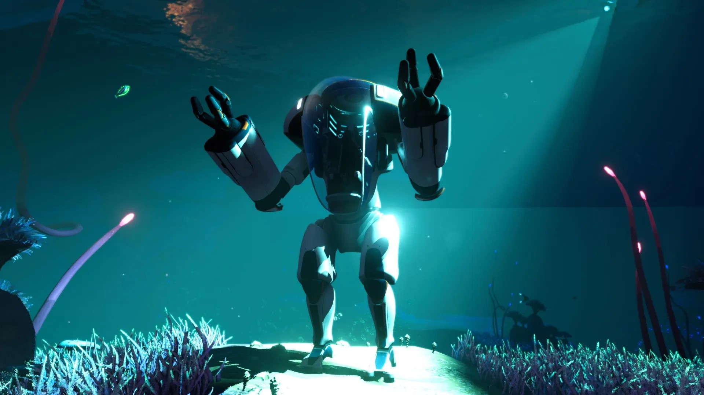
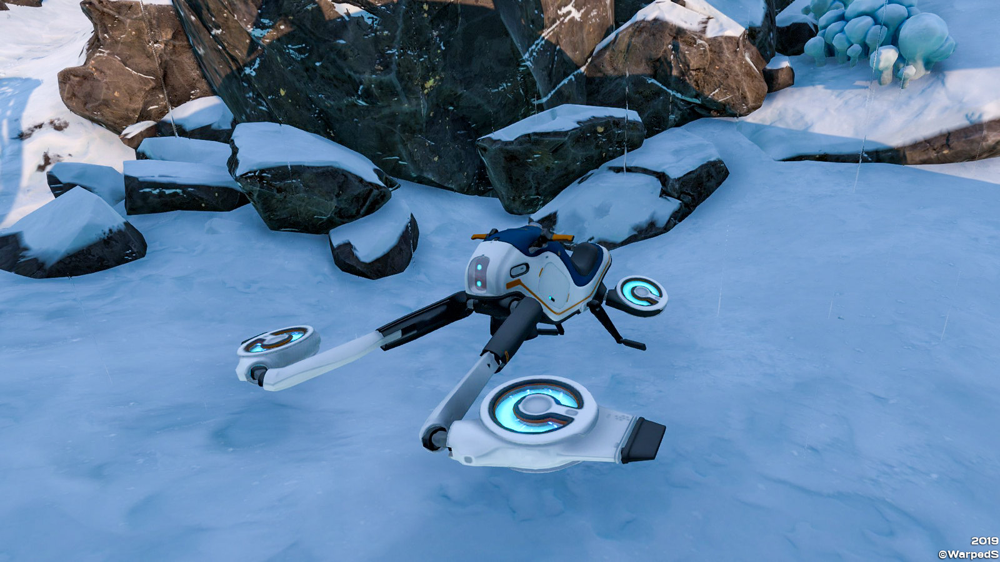
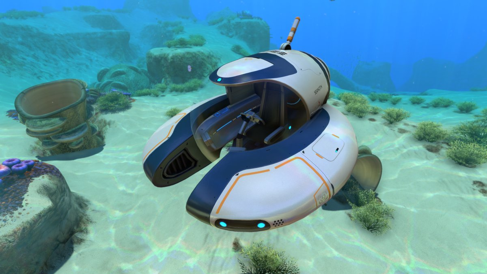

Vehículos de Subnautica Below Zero

SeaTruck
Es el vehículo modular principal. Este permite agregar módulos como almacenamiento y fabricador.

PRAWN Suit
Es un exotraje blindado que sirve para exploración profunda y minería avanzada.

Snowfox
Es una moto deslizadora que viaja rápido sobre la superficie helada del Ártico.
Vehículos de Subnautica

Seamoth
Un pequeño submarino veloz ideal para exploración de media profundidad.

Cyclops
Es un submarino enorme que sirve como base móvil y puede descender a grandes profundidades.
PRAWN Suit
Es un exotraje blindado que sirve para exploración profunda y minería avanzada.